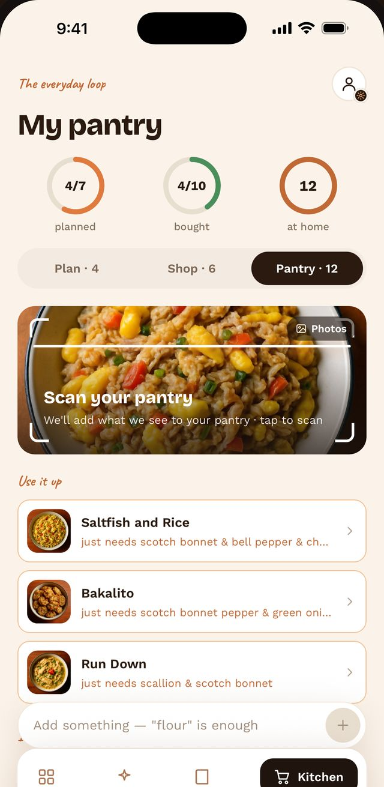

What can I cook tonight?
Tap what's in your kitchen and watch the dishes sort themselves. In the app, you just take a photo of your fridge.
On Android? Carecipe is coming to Google Play soon.
10 ingredients capturedTap to change
This uses 11 real Carecipe recipes. The app searches all 1,322.
Point. Snap. Cook.
Carecipe lists what it sees in your fridge, cupboard or shopping bag. You fix anything it got wrong, and the dishes line up.


Or "Sunday lunch for six", or "quick, and the kids will eat it".
Missing ingredients go onto one shopping list, sorted by aisle.
Tap Share, then Carecipe. Your saved recipes join the suggestions too.
Questions
Is Carecipe free?
Yes. 200 recipes and 15 AI actions a month for scans, searches and imports. Carecipe Plus opens all 1,322 recipes and lifts the cap, with a 7-day free trial. Cancel any time.
Does the fridge scan need to be perfect?
No. Nothing needs to be exact. You can remove or add ingredients before it suggests anything.
Do I need an account?
No sign-up and no ads. Your recipes stay on your phone.
Is it on Android?
On iPhone now, and coming to Google Play soon.
Stop staring into the fridge
1,322 Caribbean dishes from 22 islands. Free on iPhone.